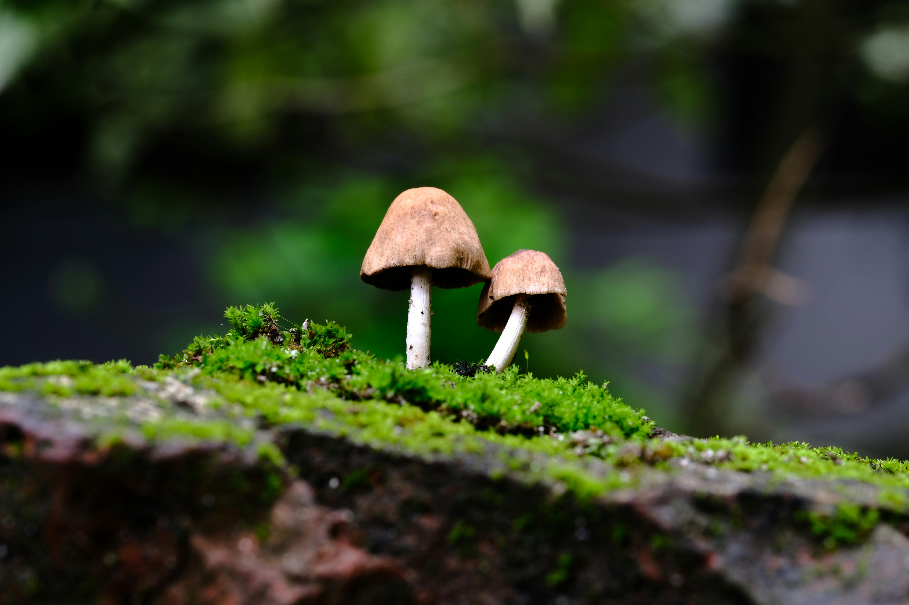
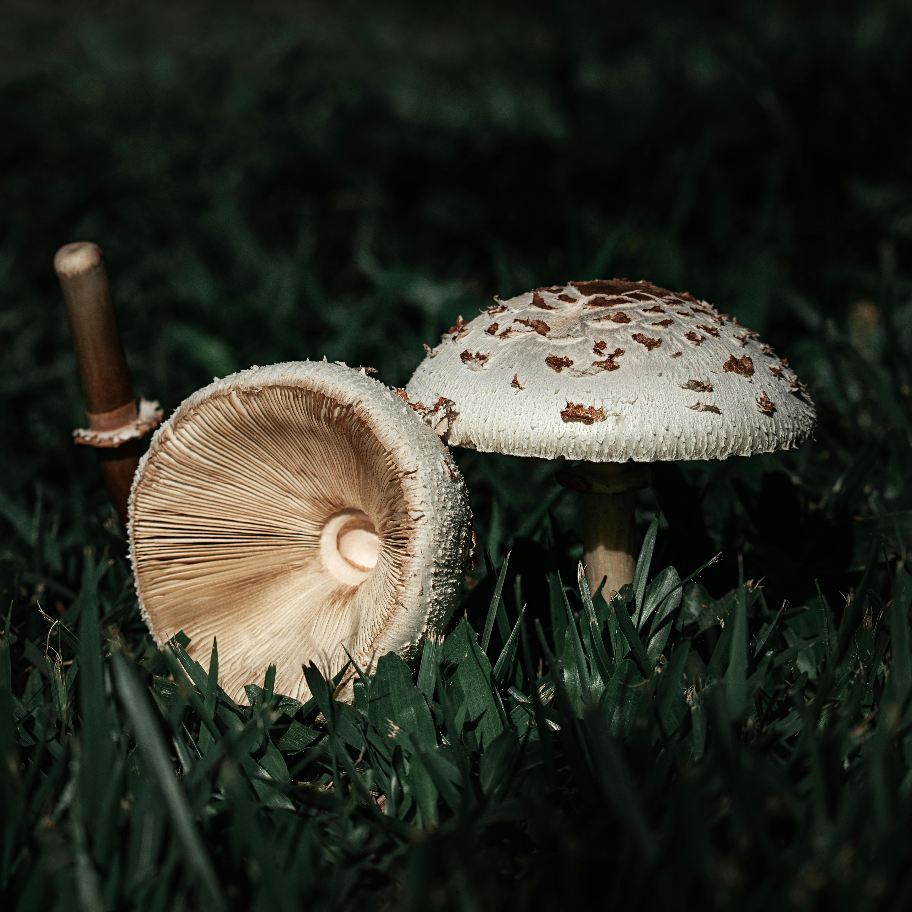

Found in India
Guchchi Mushroom
Guchchi mushrooms have plenty of health benefits as they are rich in potassium, vitamins, especially vitamin D, and antioxidants.
Read more

Found in East Asia and North America
Matsutake Mushrooms
This highly sought-after species of edible mushrooms have been popular in Japan for thousands of years, but its price comes mostly high.
Read more

Found in Europe
Waxcap Mushroom
Fruit bodies of Hygrocybe species are all agaricoid, most (but not all) having smooth to slightly scaly caps that are convex to conical
Read more